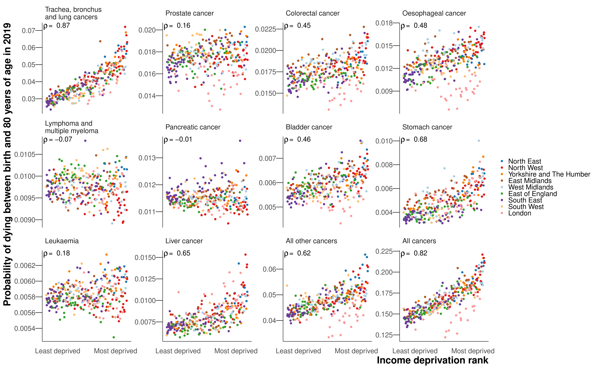

8 Trends in cancer mortality at the district level
The work in this chapter has formed the paper Inequalities in mortality from leading cancers in districts of England from 2002 to 2019: high-resolution spatiotemporal analysis of vital registration data, which is under review at The Lancet Oncology and for which I am first author.
As seen in the previous chapter, mortality from cancers in England has declined more slowly than from other major causes of death such as CVDs, and hence the share of deaths from cancers has steadily increased. In 2019, there were more deaths from cancers (144,306 (28.9% of all deaths in 2019)) than from CVDs 126,105 (25.3%), although this was less than the number of deaths from other NCDs excluding CVDs and cancers (173,323 (34.8%)) which reflects the rise in dementia deaths in recent years. Compared with CVDs and other NCDs, which were dominated by their major causes (ischaemic heart disease and stroke, and Alzheimer’s, COPD and diabetes, respectively), cancers had the largest number of individual causes in the top twelve causes of death. With over 150 different types of cancer, each with their own anatomical and molecular subtypes, cancer is extremely complex, with a specialist workforce dedicated to each unique cancer. I felt I should go deeper into the cancer story, and pay further attention to a wider array of site-specific cancers.
8.1 Methods
The methodology for this section is the same as Chapter 7, but I have stratified cancer groups further. I used the top ten leading cancer causes of death according to the total number of deaths from 2002 to 2019 for cause-specific analysis, as well as a residual group comprising all other cancer deaths.
There were 2,453,173 deaths from cancers in England from 2002 to 2019; of these, 1,533,703 (62.5%) deaths occurred before 80 years of age (Figure 8.1). Of cancer deaths before 80 years of age, 697,953 (45.5%) were deaths in women and 835,750 (54.5%) in men.

As I have increased the number of site-specific cancers from six (women) and five (men) to ten for each sex, the residual group in this chapter is smaller than the All other cancers group in Chapter 7. The results from the causes of cancer mortality that were in the twelve leading causes of death in the previous chapter are identical to those in this chapter. The full list of ICD-10 codes for each cause group can be found in Table D.2.
The modelling process for estimating cause-specific death rates is the same as Chapter 7. In addition, I ran a model for all cancer deaths combined, so that the credible intervals for overall cancer mortality are directly estimated. The results for total cancer mortality using the combined model and the sum of cause-specific models were nearly identical (correlation coefficient across all years 0.99 for both sexes; mean absolute difference in probability of dying <0.01 for both sexes).
The primary reporting outcome is, again, the unconditional probability of dying between birth and 80 years of age. I also report the mean age at death among those who died of that cause. Details on the calculations for both the probability of dying and the mean age at death can be found in Appendix A.
8.2 Results
8.2.1 All cancers
In 2019, the probability of dying from a cancer before 80 years of age ranged from one in ten (0.10 (95% CrI 0.10-0.11)) in Westminster to nearly one in six (0.17 (0.16-0.18)) in Manchester for women, and from one in eight (0.12 (0.12-0.13)) in Harrow to around one in five (0.22 (0.21-0.23)) in Manchester for men (Figure 8.2). The highest probabilities of dying were predominantly in northern cities such as Liverpool, Manchester, Hull and Newcastle, and in coastal areas to the east of London. The probability of dying from a cancer declined in all districts from 2002 to 2019, but at varying rates. The district with the greatest reduction for women of 30.1% (25.6% to 34.5%) was nearly five times that of the smallest, at 6.6% (0.3% to 13.1%). For men, the largest decrease was triple that of the smallest, 36.7% (32.2% to 41.2%) compared to 12.8% (7.1% to 18.8%).

8.2.2 Site-specific cancers
The mean age at death in 2019 among those who died before 80 years of age varied from 63.0 years for breast cancer to 69.0 years for trachea, bronchus and lung cancers (hereafter referred to as lung cancer for brevity) in women and from 66.1 years for the combined category of all other cancers to 72.2 for prostate cancer in men.


The leading cancer cause of death for both sexes was lung cancer, causing a total of 218,561 deaths (18.7% of all cancer deaths across all ages) in women and 282,422 deaths (22.0%) in men from 2002 to 2019 (Figure 8.1). Of these, 148,551 (42.4%) and 201,862 (57.6%) occurred before 80 years of age in the two sexes, respectively. Lung cancer was also one of the most unequal cancers, with 3.7- and 3.1-fold variation across districts in 2019 in the probability of death for women and men, respectively. The highest probabilities of dying were concentrated in the urban North West and North East (Figure E.9), with the highest probability of death in 2019 being nearly one in sixteen for women (0.06 (0.06-0.07) in Knowsley) and above one in fourteen for men (0.07 (0.07-0.08) in Manchester). The distribution of district-level probabilities of dying from lung cancer was nearly identical in 2002 and 2019 for women, whereas for men the probabilities declined everywhere from 2002 to 2019 (Figure 8.3).
Lung cancer was followed by the major sex-specific cancers – breast cancer (177,528 (15.2%) deaths) for women and prostate cancer (164,871 (12.8%) deaths) for men. In 2019, deaths from these cancers had less district-level inequality than from lung cancer (Figure 8.3), although the probability of dying from prostate cancer was noticeably lower in northwest London than elsewhere (Figure E.19). The probability of dying from ovarian cancer was also lower in London, in contrast to corpus uteri cancer, where east London had the highest probabilities of dying nationally (Figure E.18). High probabilities of death from liver cancer, one of the leading causes of cancer mortality among men, were very concentrated in the North West, the North East, and central London (Figure E.20). Stomach cancer mortality showed vast inequality (3.3-fold for both sexes), with the highest probabilities of dying in the urban North West (Figure E.13). The cancers with the least geographical variability were lymphoma and multiple myeloma (1.2-fold for both sexes) and leukaemia (1.1-fold for women and 1.2-fold for men).

For women, the district-level probabilities of dying from stomach, oesophageal, lung and the residual category of all other cancers were correlated, with pairwise correlation coefficients ranging from 0.51 to 0.75 (Figure 8.4). For men, the probability of dying from lung cancer was correlated with the probability of dying from stomach, liver, bladder, colorectal, oesophageal, and all other cancers. There were particularly high correlations between the probabilities of dying from bladder and oesophageal cancers (0.71), and from oesophageal and colorectal cancers (0.69). Probabilities of dying from leukaemia, lymphoma and multiple myeloma, pancreatic or corpus uteri cancer were only weakly correlated with probabilities for other categories.


The probability of dying from a cancer was associated with poverty for both sexes, with Spearman correlation coefficients of 0.77 for women and 0.82 for men (Figure 8.5). In part, this was due to the probability of dying from the leading cancer for both sexes, lung cancer, exhibiting the strongest correlations with poverty of any of the cancer groups (0.78 for women and 0.87 for men). There were also strong correlations between poverty and mortality from stomach cancer (0.63 for women and 0.68 for men), all other cancers (0.59 and 0.62) and liver cancer (0.65 for men for whom it was analysed). The probabilities of dying from breast (0.02), prostate (0.16) pancreatic (0.04 and -0.01), lymphoma and multiple myeloma (0.00 and -0.07), leukaemia (-0.06 and 0.18), and colorectal cancer in women (0.09) showed little or no association with poverty. Those in poor districts of London had lower probabilities of dying from lung, colorectal, oesophageal, bladder (men), and all other cancers than in comparably deprived districts in the rest of the country (Figure 8.5). This London advantage dampened the association with poverty for mortality from lung cancer and all other cancers in particular, and increased the extent of variability across districts at higher levels of poverty.
8.2.3 Change from 2002 to 2019
The probability of dying from a cancer before 80 years of age declined from 2002 to 2019 in every district for both sexes, with median reductions across districts of 18.7% for women and 23.4% for men (Figure 8.6). Districts in London achieved the largest declines. Among cause categories, the largest reductions in mortality were for stomach cancer, with the declines in probability of dying before 80 years of age ranging between 39.1% and 57.2% for women across districts, and between 51.5% and 58.8% for men from 2002 to 2019, all with posterior probability >0.99. The probability of dying from oesophageal cancer also decreased in every district for women, but varied for men from a 42.9% (27.7% to 56.0%) decrease in Plymouth to a 7.0% (-19.8% to 42.4%) increase in Gosport (Figure 8.6 and Figure E.11). The posterior probability that the district saw a decline in mortality from oesophageal cancer was >0.80 in 242 (77.1%) districts in men. Lung cancer mortality decreased everywhere for men with posterior probability >0.99, but for women, there were mixed trends. The largest declines were in London, the strongest seen in Newham (decrease of 29.5% (18.5% to 38.8%)), whereas the probability of dying increased in many districts in the East of England, with the largest increase of 27.0% (6.8% to 49.7%) in Tendring (Figure 8.6 and Figure E.9). The posterior probability that the district observed a decline in mortality from lung cancer in women was >0.80 in 197 (62.7%) districts. Women in 4 (1.3%) districts experienced an increase in lung cancer mortality with a posterior probability >0.80, and in the remaining 113 (36.0%) districts there was no clear trend at this level of posterior probability.

The probability of dying from pancreatic cancer increased (notably in the South East (Figure 8.6); median increase across districts of 8.6% for women and 6.7% for men) in all but one sex-district combination (Tower Hamlets for women; decrease of 1.0% (-12.1% to 15.7%)). Liver cancer for men (median increase 78.3%) saw increases in mortality in all districts with posterior probability >0.98, and corpus uteri cancer for women (median increase 31.7%) saw increases in mortality in all but one district with PP>0.80. There were increases in liver cancer mortality in excess of 100% in 32 (10.2%) districts, mostly in northern England (Figure 8.6).
8.3 Discussion
This small-area analysis of deaths from leading cancers in England revealed that although overall cancer mortality decreased everywhere, the gains were unequal, with the largest declines almost five times that of the smallest. Preventable cancers – those with strong links to behavioural and environmental risk factors – had both the largest inequalities in mortality across districts in 2019 and the widest variation in change in mortality from 2002 to 2019. The cancers showing the least inequality across districts, lymphoma and multiple myeloma, and leukaemia, were those with weaker and more heterogeneous links to modifiable risk factors.
8.3.1 Strengths and limitations
A strength of our study is the presentation of mortality from leading cancers, as well as all cancers together, for subnational spatial units in England over a period of substantial change in public health programmes and healthcare technology and provision.
The study suffers the same limitations as Chapter 7: the residual group could have been split into more specific causes of death; each cause group was analysed separately rather than in a single joint model; the probability of dying between birth and 80 years masks mortality differences in the oldest age groups; the analysis was carried out at the district level rather than for MSOAs; the study did not account for the effects of between-district migration. Beyond this, I did not decompose mortality into incidence and survival, which would provide further insight into potential drivers of variations of mortality across site-specific cancers and geography, and should be the subject of further research.
8.3.2 Comparison with previous work
Few studies have looked at the geography of cancer mortality. In England, there have been subnational estimates for cancer survival, but these have been at large administrative units based on the organisation of the NHS (NHS Digital, 2022; Walters et al., 2011). There are mortality estimates for cancers generated by aggregating several years of data, again for large NHS boundaries rather than districts (National Cancer Intelligence Network, 2010; NHS Digital, 2022). The only study for multiple cancers at a finer resolution than district level was SAHSU’s environment and health atlas, which reported risk relative to the national population in census wards (Hansell et al., 2014). The analysis aggregated data over a 25-year period and hence did not analyse variations over time. The relative risk estimates for lung cancer shared a similar geographical pattern to our results on mortality, with the highest risk in the urban North West and North East.
Two studies investigated trends in cancer mortality, although with limited resolution, either at the level of upper-tier local authorities, of which there are 150, or aggregating communities into deciles of deprivation within each region. Both studies similarly found that areas in London were exceptional, with generally lower rates of premature cancer mortality than expected for their level of deprivation (Steel et al., 2018), attenuated inequality between the most and least deprived deciles, and lower mortality for prostate cancer (Arık et al., 2022, 2021). The latter study, which only focussed on the four leading cancers, reported that in the worst performing regions inequality between the top and bottom deciles in female lung cancer mortality was similar to the 3.7-fold gap between the top and bottom districts seen in this study.
Elsewhere, cancer atlases have been limited to coarse geographical units and aggregate multiple years of data rather than presenting information on trends. For smaller areas, a study in the USA at the county level found that lung cancer and stomach cancer were among the cancers with the largest inequalities in mortality across counties in 2014, but there was limited variation for leukaemia, lymphoma and multiple myeloma, which is consistent with the results presented here (Mokdad et al., 2017). The study also found that the strongest increases over time were in liver cancer mortality, with nearly all counties seeing an increase.
8.3.3 Explaining the variation and implications
Cancer mortality depends on both incidence and survival. Incidence is influenced by three modifiable factors: exposure to risk factors associated with cancer, including smoking, alcohol use, obesity, infections, and occupational and environmental exposures; the uptake of preventative treatments such as vaccinations; and the implementation of screening programmes for pre-cancerous lesions and early-stage cancers. In England, smoking, alcohol use and obesity tend to be higher where cancer mortality is highest, generally in the North (NHS Digital, 2023). The dominant risk factor in the UK remains tobacco smoking (Parkin et al., 2011), which has declined substantially since the 1960s, when it was the target of public health policy, to a prevalence among adults of 13.9% in 2019 (NHS Digital, 2023). The rise and fall in female smoking rates and smoking-attributable mortality have lagged behind that in men by about 20-30 years (Thun et al., 2012), leading to the mix of increase and decrease in female lung cancer mortality observed here, with similar patterns observed for COPD in Chapter 7. Similarly to smoking rates, after reaching a peak in the mid-2000s, alcohol consumption has declined (NHS Digital, 2023). In contrast to trends in smoking and alcohol use, obesity rates have steadily risen over the past few decades from 14.9% of adults in 1993 to 28.0% in 2019, mirrored by a rise in diabetes (NHS Digital, 2023). These trends could be partly responsible for cancers associated with diabetes and obesity increasingly co-occurring with those that are due to smoking and alcohol use, especially in men among whom smoking rates declined earlier.
I observed substantial increases in liver cancer mortality for men, especially in northern districts, which mirror a long-run trend in the USA where, in nearly all counties, there have been increases in liver cancer mortality (Mokdad et al., 2017). The major risk factors for liver cancer are infections, smoking, alcohol use and diabetes (Parkin et al., 2011). In particular, alcohol consumption has driven a large proportion of liver disease throughout Europe (Blachier et al., 2013), and the relative risk due to diabetes of liver cancer incidence is more than two, which is the highest of any site-specific cancer (Tsilidis et al., 2015). The observed trends in liver cancer mortality could be linked to the heterogeneous trends in these risk factors, which have not been fully offset by reductions in smoking rates. Oesophageal cancer is attributed to tobacco smoking as well as other lifestyle and environmental factors such as alcohol consumption, poor diet, and obesity (Parkin et al., 2011). Differences between men and women in the temporal and geographical distribution of these risk factors may potentially account for our observation that oesophageal cancer mortality decreased in all districts for women, but increased in some districts for men. Stomach cancer exhibited the largest decreases in mortality, as well as substantial inequality in the level across districts. In part this may be due to variable prevalence of, and heterogeneous decrease in, H pylori infection across districts.
Survival is influenced by patient and healthcare factors including cancer awareness and utilisation of care, barriers to screening or early diagnosis, tumour factors (stage, topography, histology), comorbidities, and the quality of care. The UK, as a whole, has performed badly in terms of survival compared to other European countries (Walters et al., 2015). There were also subnational variations in survival, both in the cancers with the largest inequalities in mortality in our results (i.e. stomach and lung cancer) and for other cancers including oesophageal cancer, ovarian cancer, and leukaemia (NHS Digital, 2022). The UK has national screening programmes for breast, colorectal and cervical cancers. Cervical cancer was not in the top ten leading cancers for women by number of deaths, and so was included in the residual group. Both breast and colorectal cancers saw mortality declines in all districts, albeit at varying rates. Breast and colorectal cancer mortality in women both showed relatively low geographical inequality and no correlation with poverty, while there was moderate correlation between colorectal cancer mortality for men and poverty. The coverage of the screening programmes varies between districts, ranging from 51.2% to 79.4% for colorectal and 40.2% to 79.3% for breast (Public Health England, 2023). Despite these specific screening programmes, across all cancer sites, the proportion of cancers diagnosed at stages 1 and 2 varied from 42.0% to 61.3% (Public Health England, 2023).
Combinations of risk factors and healthcare can also explain London’s better performance for some cancers. Firstly, London, and particularly the east of London, is the most ethnically diverse region in the country. Smoking rates amongst Asian (8.3% of adults) and black (9.7%) groups are lower than the white ethnic group (14.4%) (Office for National Statistics, 2021). Secondly, there could be differences in the quality of healthcare, either through the availability of innovative treatments such as immunotherapies, or, as London has a much higher density of hospitals, patients might be more able to travel to a specialist hospital rather than their local hospital compared to larger regions, where the hospital might be much less accessible and further from support networks. Unlike patterns in other cancers however, districts in East London had the highest mortality for corpus uteri cancer, which has higher incidence rates in the black ethnic group in England (Delon et al., 2022).
Since the turn of the century, two major national policy initiatives in the UK have aimed to improve cancer survival. Firstly, the NHS Cancer Plan of 2000 specifically targeted socioeconomic inequalities in cancer survival through an increase in expenditure, a focus on centralisation and specialisation, and a greater use of multi-disciplinary teams. Secondly, launched in 2008, the National Awareness and Early Diagnostic Initiative, addressed both patient factors, such as reducing the stigma around cancer and the barriers to seeing a doctor, and tumour factors, such as improving access to screening and optimising referral pathways so patients present at a less advanced stage. However, no consistent evidence was found of a direct impact on one-year survival after these successive initiatives (Exarchakou et al., 2018; Rachet et al., 2010), and cancer awareness explains little of the socioeconomic disparities in survival (Niksic et al., 2016). Recent NHS plans have renewed focus on survival targets and early diagnosis (NHS, 2019), as well as the roll out of a national lung cancer screening programme targeted at those with a history of smoking between the ages of 55 and 74 years (Department of Health and Social Care, 2023). The present results show heterogeneous trends in mortality, particularly for preventable cancers. To ensure these inequalities in mortality are reduced, factors affecting both incidence and survival at the local level must be considered.
8.4 Summary
I performed a spatiotemporal analysis of vital registration data on deaths from the ten leading cancers by sex in England from 2002 to 2019. I used life table methods to calculate the probability of dying between birth and 80 years of age by sex, cancer cause of death, district and year.
The probability of dying from birth to 80 years from a cancer declined in all districts from 2002 to 2019, but at varying rates: for women, the greatest reduction was nearly five times that of the smallest; for men, the largest decrease was triple that of the smallest. The most unequal cancers were lung cancer for women (3.7-fold variation in mortality across districts) and stomach cancer for men (3.3-fold). The cancers with the least geographical variability were lymphoma and multiple myeloma (1.2-fold for both sexes) and leukaemia (1.1-fold for women and 1.2-fold for men). Unlike in other regions, in London, mortality from lung, colorectal, oesophageal, and bladder cancer for men was not associated with district level poverty.
Preventable cancers with modifiable risk factors showed heterogeneous trends and the greatest geographical inequality. For some of these cancers, poorer districts in London saw lower cancer mortality than poor areas elsewhere in the country, suggesting that some features of London weaken the relationship between poverty and mortality.